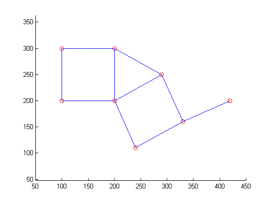
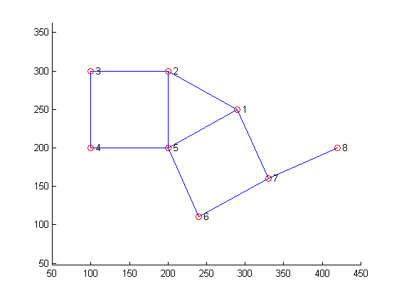
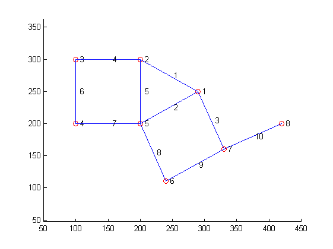

Contents
function showTestGraph01(varargin)
%SHOWTESTGRAPH01 One-line description here, please. % % output = showTestGraph01(input) % % Example % showTestGraph01 % % See also % % % ------ % Author: David Legland % e-mail: david.legland@grignon.inra.fr % Created: 2011-05-23, using Matlab 7.9.0.529 (R2009b) % Copyright 2011 INRA - Cepia Software Platform.
Base graph
[nodes edges] = createTestGraph01; figure(1); clf; drawGraph(nodes, edges); hold on; axis([50 450 50 350]); axis equal;
Node labels
drawNodeLabels(nodes, 1:size(nodes, 1));
Node edges
drawEdgeLabels(nodes, edges, 1:size(edges, 1));